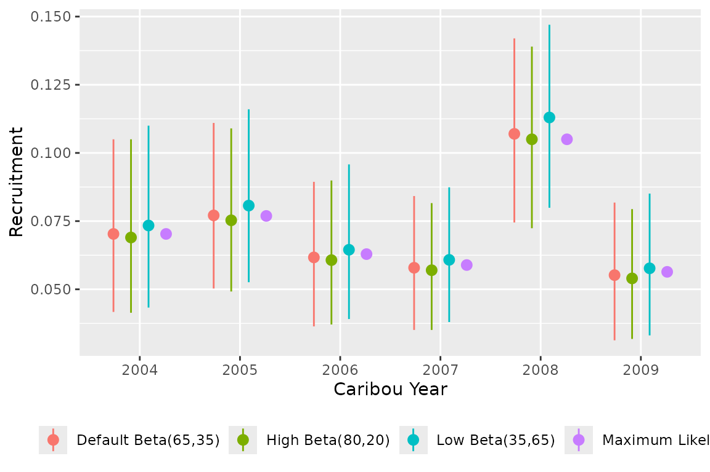
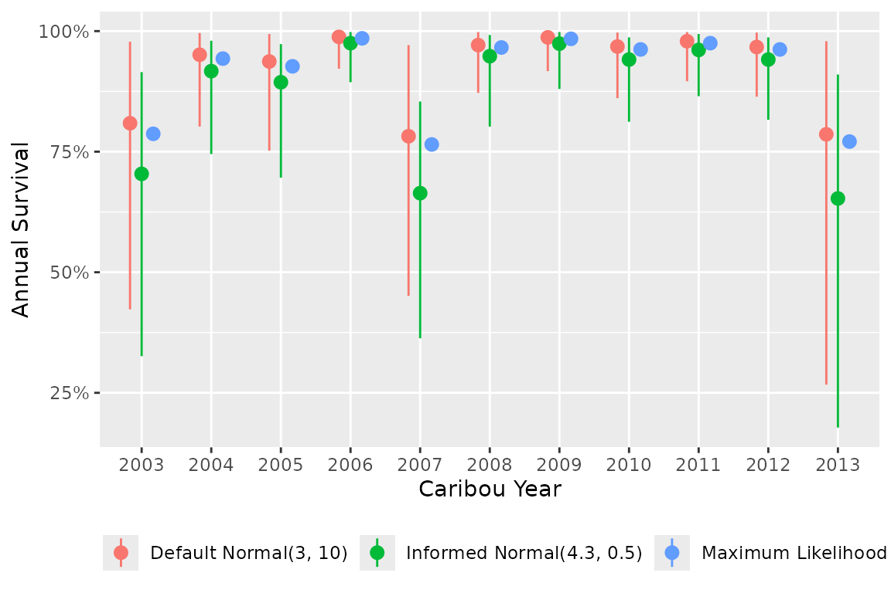
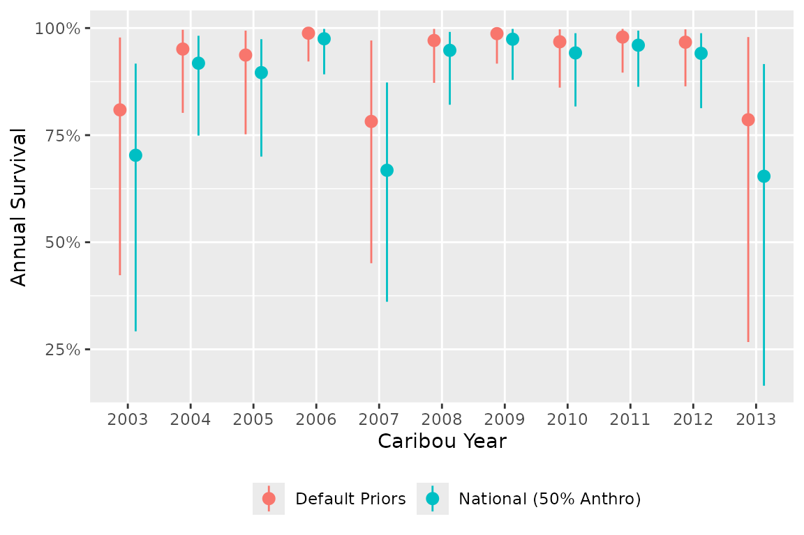

In Bayesian analysis, a prior distribution encodes what is known or assumed about a parameter before observing the data. The prior is combined with the likelihood of the data to produce the posterior distribution, which represents the updated knowledge about the parameter after observing the data. When the data are abundant, the posterior is dominated by the likelihood and the choice of prior has little practical effect. When the data are sparse, the prior has more influence on the posterior, which can be beneficial if the prior reflects genuine biological knowledge, or problematic if the prior is poorly chosen.
Priors range from uninformative (assigning equal probability to all
values) to strongly informative (concentrating probability near a
specific value). bboutools uses weakly informative priors
by default, which rule out biologically implausible values but remain
diffuse enough to let the data drive the estimates (Gelman, Simpson, and Betancourt 2017; McElreath
2016).
If the user is interested in fitting models without priors, see
bb_fit_recruitment_ml() and
bb_fit_survival_ml(), which have identical models but use a
frequentist approach (Maximum Likelihood) to parameter estimation.
Models fit with Maximum Likelihood are equivalent to Bayesian models
with completely uninformative priors (McElreath
2016).
Survival
Given the full model, the expected survival probability for the i^{th} year and j^{th} month is \text{logit}(Survival[i,j]) = b0 + bAnnual[i] + bMonth[j] + bYear \cdot Year[i] Where bAnnual can be a fixed or random effect of categorical year on the intercept on the log-odds scale and Year is the scaled continuous year.
This model has the following default priors in
bboutools
Intercept (log-odds scale) b0 \sim Normal(3, sd = 10)
Year fixed effect bAnnual[i] \sim Normal(0, sd = 10)
Year random effect sAnnual \sim Exponential(1) bAnnual \sim Normal(0, sd = sAnnual)
Month random effect sMonth \sim Exponential(1) bMonth \sim Normal(0, sd = sMonth)
Year continuous effect bYear \sim Normal(0, sd = 2)
Recruitment
Given the full model, the expected recruitment (calves per adult female) for the i^{th} year is logit(Recruitment[i]) = b0 + bAnnual[i] + bYear \cdot Year[i] where bAnnual can be a fixed or random effect of categorical year on the intercept on the log scale and Year is the scaled continuous year.
The model has the following default priors in
bboutools
Intercept (log-odds scale) b0 \sim Normal(-1, sd = 5)
Categorical year fixed effect bAnnual[i] \sim Normal(0, sd = 5)
Categorical year random effect sAnnual \sim Exponential(1) bAnnual \sim Normal(0, sd = sAnnual)
Continuous year effect bYear \sim Normal(0, sd = 2)
The recruitment model can also estimate the adult female proportion from observed Cows and Bulls Cows = adult\_female\_proportion \cdot (Cows + Bulls) Where the default prior for adult\_female\_proportion has a mode of 65% adult\_female\_proportion \sim Beta(65, 35)
Prior selection and influence
The default weakly informative priors are appropriate for most analyses. A user may wish to adjust priors in several situations: when strong biological knowledge exists for a parameter (e.g., adult female proportion from published studies), when the dataset is small and the user wants to constrain estimates to a plausible range, or when comparing the sensitivity of results to different prior assumptions. The examples below illustrate how tightening or relaxing priors affects parameter estimates relative to the Maximum Likelihood baseline.
Adult female proportion
To illustrate the effect, we construct a dataset where a large
proportion of adults are unclassified by moving half of observed Cows
and Bulls into UnknownAdults. We then compare recruitment
estimates from priors centered on high (80%) and low (35%) adult female
proportions, along with the default and maximum likelihood
estimates.
set.seed(1)
data <- bboudata::bbourecruit_a |>
filter(Year >= 2005, Year <= 2010) |>
mutate(
UnknownAdults = UnknownAdults + round(Cows / 2) + round(Bulls / 2),
Cows = Cows - round(Cows / 2),
Bulls = Bulls - round(Bulls / 2)
)
# default prior: Beta(65, 35), mode at 65%
fit <- bb_fit_recruitment(data, adult_female_proportion = NULL, quiet = TRUE)
# high prior: Beta(80, 20), mode at ~81%
fit_high <- bb_fit_recruitment(
data,
adult_female_proportion = NULL,
quiet = TRUE,
priors = c(
"adult_female_proportion_alpha" = 80,
"adult_female_proportion_beta" = 20
)
)
# low prior: Beta(35, 65), mode at ~35%
fit_low <- bb_fit_recruitment(
data,
adult_female_proportion = NULL,
quiet = TRUE,
priors = c(
"adult_female_proportion_alpha" = 35,
"adult_female_proportion_beta" = 65
)
)
# maximum likelihood for comparison
fit_ml <- bb_fit_recruitment_ml(
data,
adult_female_proportion = NULL,
quiet = TRUE
)The choice of prior on adult\_female\_proportion affects the predicted recruitment.

The influence of the adult\_female\_proportion prior on recruitment predictions depends on the proportion of unclassified adults in the data. When most adults are already classified as Cows or Bulls, the prior has little practical effect on recruitment.
The adult\_female\_proportion can
also simply be fixed. See bb_fit_recruitment() for
details.
Survival intercept
A user may have prior knowledge about the expected survival rate for
their population from published studies or neighboring populations. This
can be encoded in the intercept prior b0. The default prior
for survival is b0 ~ Normal(3, 10) on the logit scale,
which is very diffuse.
As an example, suppose published estimates suggest annual survival is
approximately 85% for a population. On the logit scale, 85% annual
survival corresponds to a monthly survival of approximately 0.85^{1/12} \approx 0.9865, or \text{logit}(0.9865) \approx 4.3. A prior of
b0 ~ Normal(4.3, 0.5) would encode this belief while still
allowing the data to shift the estimate.
set.seed(1)
data <- bboudata::bbousurv_c
# default prior: b0 ~ Normal(3, 10)
fit_default <- bb_fit_survival(data, quiet = TRUE)
# informative prior centered on ~85% annual survival
fit_informed <- bb_fit_survival(
data,
priors = c(b0_mu = 4.3, b0_sd = 0.5),
quiet = TRUE
)
# maximum likelihood for comparison
fit_ml <- bb_fit_survival_ml(data, quiet = TRUE)
The informative prior pulls survival estimates toward the prior mean, particularly in years with sparse data. With abundant data, the prior has less influence and the estimates converge toward the Maximum Likelihood values.
Rather than manually calculating intercept priors from published
survival rates, bboutools provides functions to derive
intercept priors from disturbance levels using national
demographic-disturbance relationships.
National Disturbance-Informed Priors
The user can specify priors informed by national demographic-disturbance relationships (Johnson et al. 2020) instead of the default weakly informative priors. These priors link anthropogenic and fire disturbance levels to expected survival and recruitment, based on the national boreal caribou model.
The functions bb_priors_survival_national() and
bb_priors_recruitment_national() return intercept priors
(b0_mu and b0_sd) based on the percent
anthropogenic disturbance (anthro) and percent fire
disturbance not overlapping with anthropogenic disturbance
(fire_excl_anthro). All other prior parameters retain their
defaults from bb_priors_survival() and
bb_priors_recruitment().
nat_priors <- bb_priors_survival_national(anthro = 50, fire_excl_anthro = 5)
nat_priors
#> b0_mu b0_sd
#> 4.3321205 0.5152558For aggregate annual survival data, the annual = TRUE
option returns priors on the annual survival scale.
nat_priors_annual <- bb_priors_survival_national(
anthro = 50,
fire_excl_anthro = 5,
annual = TRUE
)
nat_priors_annual
#> b0_mu b0_sd
#> 1.7665175 0.5437549As an example, we compare survival estimates from the default priors and national disturbance-informed priors.
set.seed(1)
data <- bboudata::bbousurv_c
fit_default <- bb_fit_survival(data, quiet = TRUE)
fit_national <- bb_fit_survival(
data,
priors = bb_priors_survival_national(anthro = 50, fire_excl_anthro = 5),
quiet = TRUE
)
Higher anthropogenic disturbance leads to lower expected survival. The national priors shift the intercept accordingly, resulting in a more informative prior centered on the expected survival for the given disturbance level.
Year Trend Prior and Data Rescaling
The CaribouYear variable is internally z-score
standardized before model fitting.
Rescaled\_Year = \frac{CaribouYear - mean(CaribouYear)}{sd(CaribouYear)}
This rescaling affects the interpretation of the year trend prior
bYear. The prior
bYear ~ Normal(bYear\_mu, sd = bYear\_sd) operates on the
rescaled year scale, not the original calendar year scale.
The default bYear_sd = 2 is intentionally diffuse on the
rescaled scale and is generally appropriate for most datasets.
If a user wants to specify an informed trend prior per calendar year,
the values must be converted to the rescaled scale by multiplying by the
standard deviation of the years in the dataset. For example, with years
2010–2015 (SD \approx 1.87), a desired
prior of 0.1 log-odds per calendar year with SD = 0.5 translates to
bYear_mu = 0.1 * 1.87 and
bYear_sd = 0.5 * 1.87 on the rescaled scale.
The rescaling improves numerical stability during model fitting and makes the default prior behave reasonably regardless of the absolute year values. Both survival and recruitment models use identical rescaling.